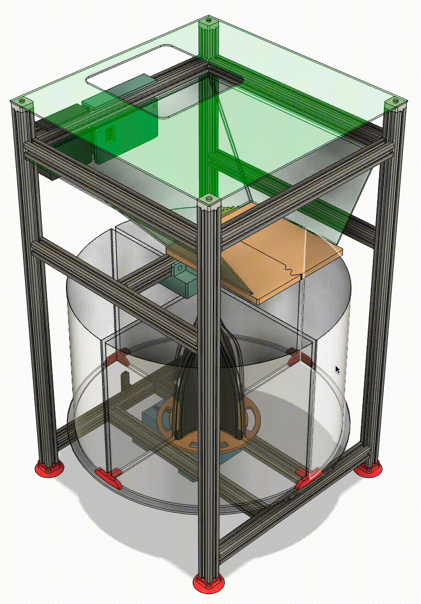
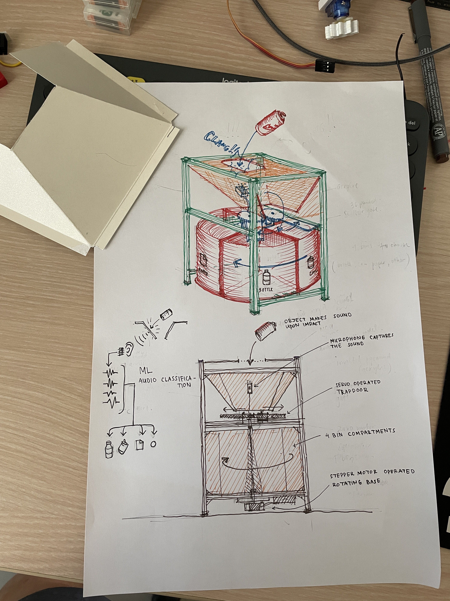
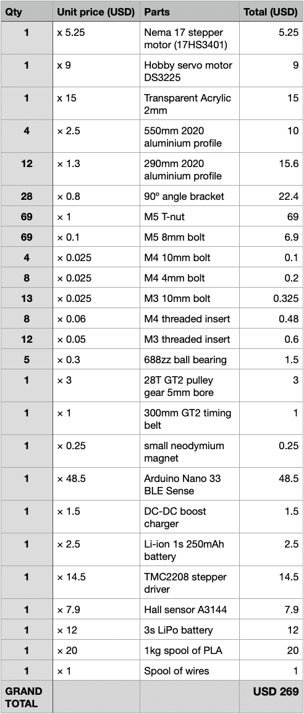
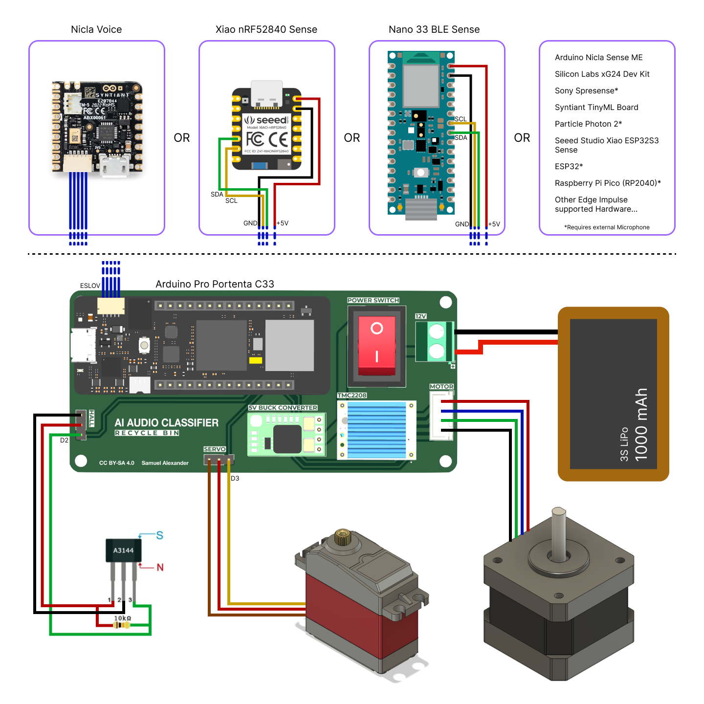
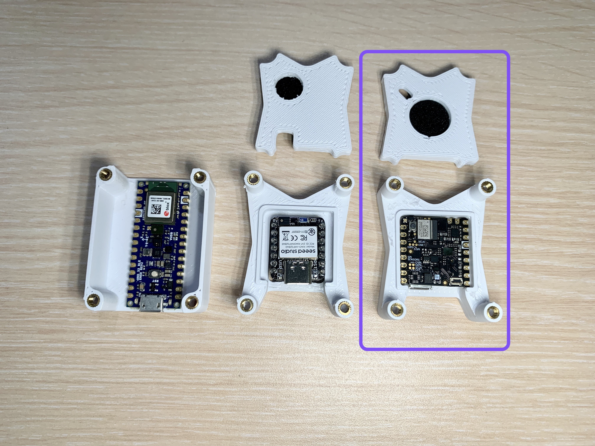
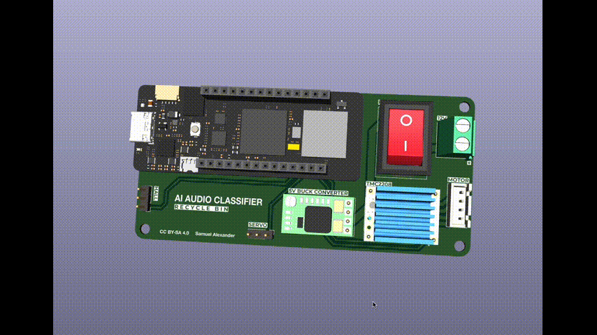
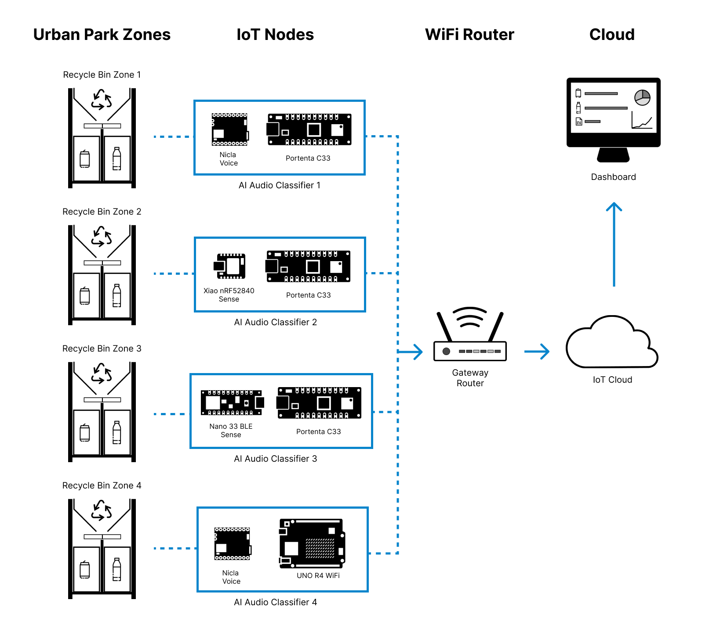

CAD: Frame, Funnel & 4-Compartment Carousel

Built Prototype with Fluorescent Acrylic Panels

Concept Sketch: Audio-Driven Classification Flow

BOM Snapshot (USD 269)

Electronics: Portenta C33, TMC2208, Servo & Hall

Swappable Edge-Audio Sensor Pucks

Custom Controller: “AI Audio Classifier” Board
